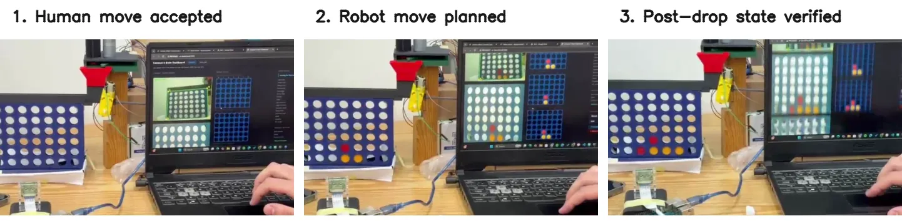
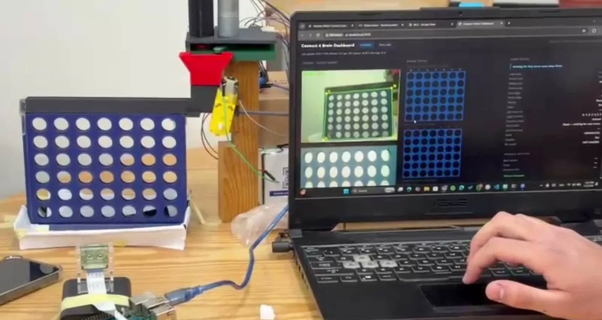

A robot that checks its own moves.
Our camera-guided robot plays Connect-4 against a person. It refuses boards that cannot happen, picks its move with minimax, drops a real token, and only believes the move once its camera sees it.
The board on this page runs the robot's real Python, the same validator and planner, in your browser. The dispenser is an animation.
Dispenser, animated: on the robot a timed carriage carries each token to its column
Waking the robot's brain (Python in your browser, about 10 MB the first time)
Try to cheat
Two checks keep the game honest
Before it thinks
A new board from the camera only counts if it is exactly one legal move away from the last board the robot trusted. A chip that vanished, two new chips at once, or a chip floating above an empty cell is rejected, and the robot keeps the last good board.
After it moves
When the robot drops a token, it already knows what the board should look like. It accepts its own move only when the camera shows that exact board within 10 seconds. A token that slid into the wrong column stops the robot with an error, instead of silently corrupting the game.

How it reads the board
The robot finds the blue frame, warps it to a square, brightens it, and reads the middle of each of the 42 holes as empty, red, or yellow. Run that exact code on a board photo, right here.
The vision code needs OpenCV in your browser, about 14 MB the first time.
This photo shows the board standing on its blue legs, which the robot never saw: its camera looked down at the grid alone. The legs join the blue frame, so automatic detection stretches the grid, and the reading slips. With the grid's own corners, the same classifier reads every hole.
How well it worked
Measured on the real robot under indoor light with a fixed camera mount, as reported in the final course report.
Reading the board
Cells read correctly, out of about 200 labelled cell images. The simple thresholds won: the board is blue and the tokens are red and yellow under steady light, while the model had little data to learn from.
3 to 15 s from command to a verified move, 7.5 s on average. The time is the mechanism and the camera check, not the image processing.
Two AI experiments
Added after the course, to test two ideas from modern AI on this project's own material.
Ask the reports
Semantic search over the paper and the four milestone reports, run in your browser. It finds the three passages closest in meaning to your question and links to their pages. It quotes the documents and never writes an answer of its own.
On 16 test questions, a passage holding the answer is in the top three for 13.
Could a general AI model read the board?
CLIP is a vision-language model trained on images and captions from the web. With no training on this board, we asked it which of three captions fits each hole: an empty hole, a red disc, or a yellow disc. The robot's own colour thresholds read the same 42 crops.
One photo, 42 holes: a small sample, computed offline with CLIP ViT-B/32.

The robot
- Raspberry Pi 4 reads the camera, runs the validator and minimax, and serves the dashboard.
- Arduino Uno releases one token with an encoder-counted magazine and moves the carriage to the column.
- 6,100 EGP in parts, about 115 USD at the April 2026 rate.
What it could not do
- All results come from one fixed camera mount and steady indoor light. Glare and other lighting shift the colour thresholds.
- The carriage has no position sensor, so the far columns miss more often.
- Board detection assumes the camera sees only the grid. With the board's blue legs in view, the grid lines up wrong.
- The labelled images and drop logs behind the numbers above were not archived, so they cannot be re-run.
- The dashboard has no login: anyone on the same network can send moves.
Who built it
Andrew Abdelmalak, Daniel Boules, David Girgis, Kirolous Kirolous, Samir Yacoub, and Youssef Salama, for MCTR 1010 Image Processing for Mechatronics at the German University in Cairo, Spring 2026, supervised by Dr. Omar M. Shehata.